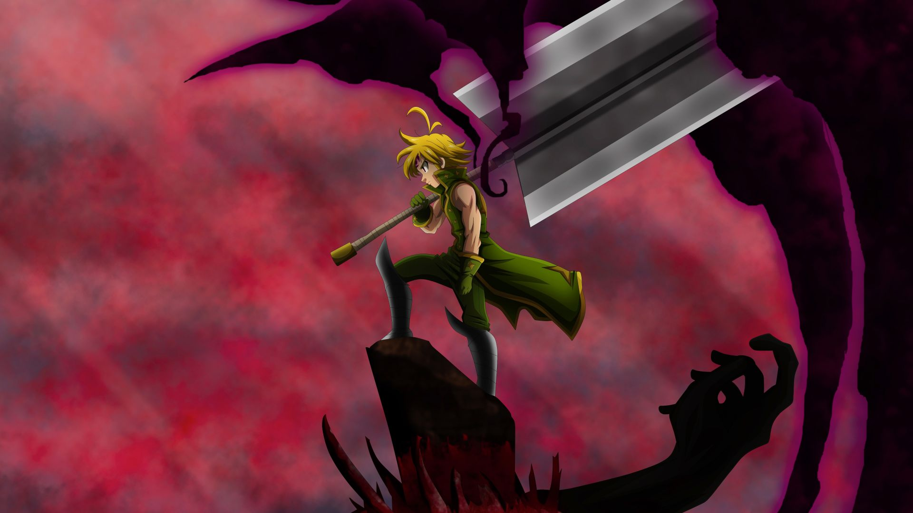

Meliodas

Meliodas é um demonio que traiu o clã dos demonios para viver um amor com elizabeth, do clã das deusas, eles receberam uma maldiçao por ter traido os clãs deles, um com a reercanaçao eterna e o outro com a imortalidade e fico esse vai e vem por 3mil anos até que ele reencontra a elizabeth pela 114° vez e com isso o meliodas fez os sete pecados capitais, e com isso eles foram atras da morte do pai de meliodas para conseguir poder o suficiente para tirar as maldições colocadas pelos pais deles, ate os irmaos do meliodas matarem ele e ele voltar para o purgatorio e reencontrar o pai e começar a grande luta dele contra o pai...
Acessar umas das lutas de meliodas